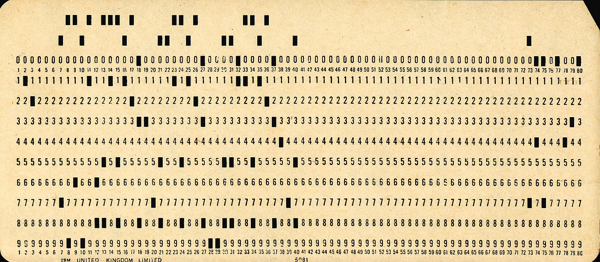
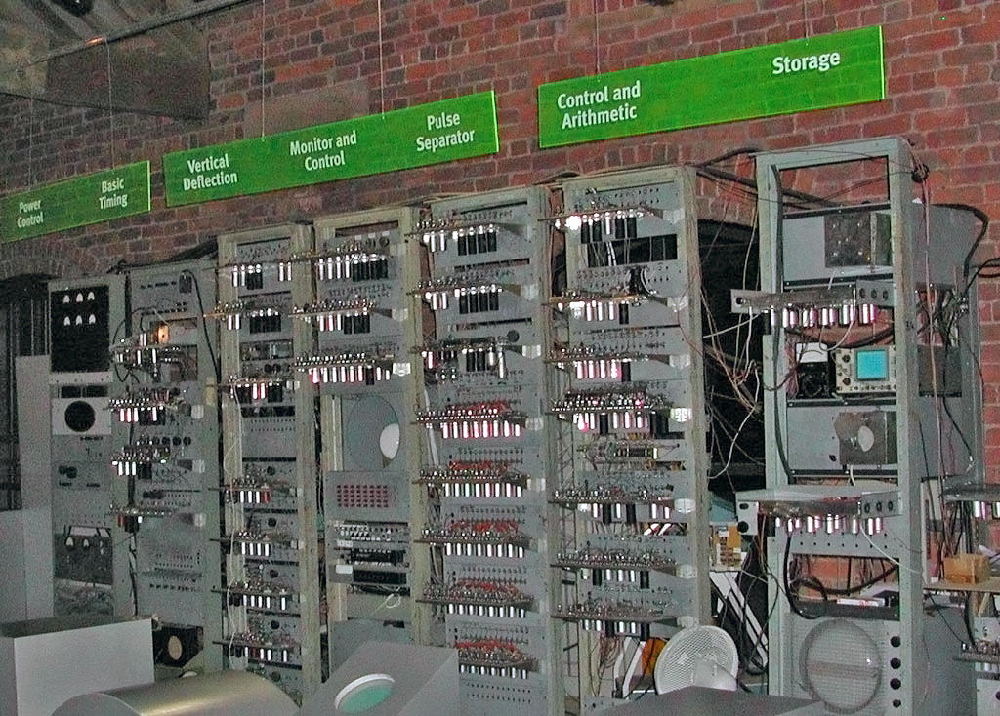
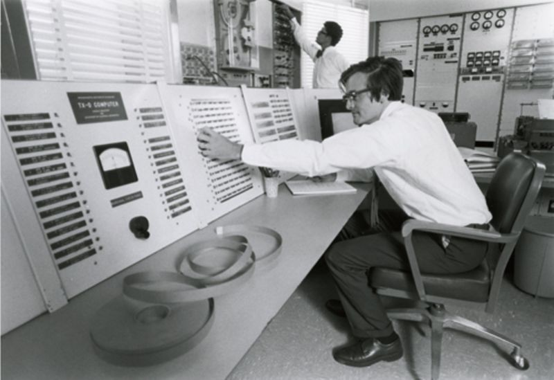
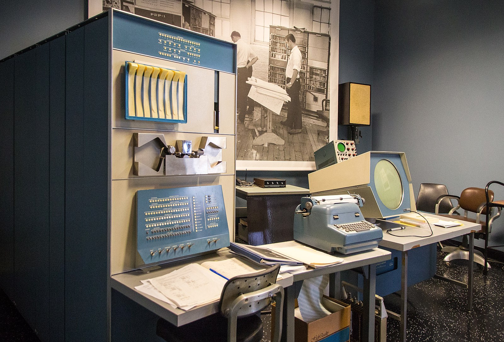
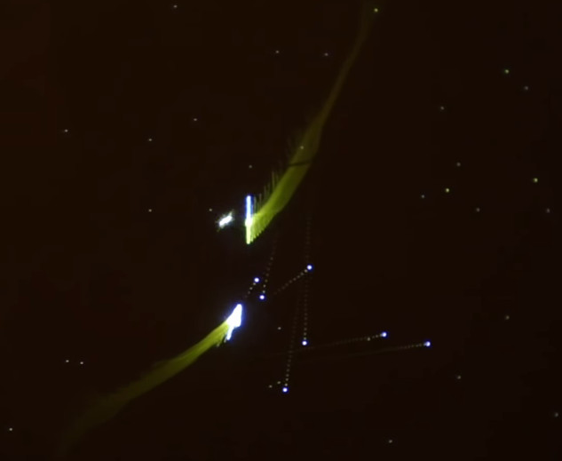
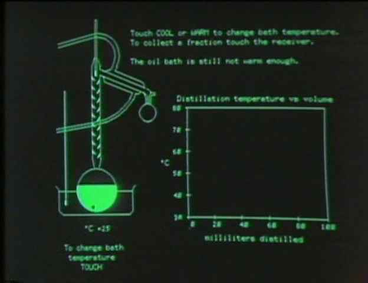
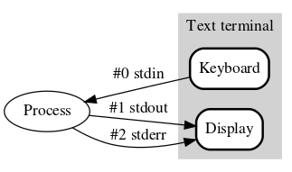

Komunikacija sa Operativnim Sistemom
Veljko Petrović
2025
Kratka, nekompletna istorija ključnih momenata u interfejsima
Početak
 (Izvor: Pete Birkinshaw CC-Generic-Attribution 2.0)
Računari bez interfejsa
- Prvobitni računari nisu ni imali interfejs u klasičnom značenju
- Bili su mašine koje transformišu podatke iz jedne forme u drugu: a podaci su ulazili (i verovatno izlazili) na apsolutno isti način, kao bušene kartice
- Bušene kartice su znatno starije od računara: najraniji poznat primer jesu kartice korišćene za ‘programiranje’ automatizovanih razboja, tkzv. Žakardove kartice
Bušene kartice
- Semjon Korsakov i Čarls Bebidž su predložili da se bušene kartice mogu interpretirati kao univerzalan način za čuvanje informacija.
- Prva osoba koja je to uradila praktično je Herman Holerit koji je iskoristio kartice ne bi li automatizovao analizu podataka popisa stanovništva 1890 u SAD.
- Ovo je dovelo do čitave gomile mašina koje su uzimale kartice i sortirale ih ili pak ih prebrojavale po raznim kategorijama kroz tabulaciju, sumiranje, i slične aktivnosti.
- Ovo su bile poznate kao ‘biznis mašine’ koje opstaju još samo kao lingvistički fosil u imenu IBM: International Business Machines.
Uloga ranih računara
- Računari su, dakle, smatrani samo naročito bistrim biznis mašinama koji se mogu navesti da rade kompleksnije operacije i to operacije koje se mogu promeniti
- Nije bilo ni pokušaja da se njima da ikakav smislen interfejs tokom prvih godina njihove primene.
Prvi interaktivni računari
- Svi računari su podržavali minimalan stepen interaktivnosti zbog debagovanja i testiranja
- Verovatno prvi računar koji bi mogli opisati kao donekle interaktivan je bio SSEM (Small Scale Experimental Machine) koji je konstruisan u Mančesteru 1948.
- SSEM je imao mehaničke prekidače koji su mogli da utiču na ponašanje računara i ekran… donekle.
- Ekran je bio više slučajnost: sistem je koristio Viljems-Kilburn tip memorije koji je, bizarno, bio katodna cev.
SSEM

Prvi interaktivni računari
- U zavisnosti da li se prikaže jedan vizuelni oblik ili drugi, katodna cev je naelektrisana pozitivno ili negativno.
- Efektivno na lokacijama na ekranu sistem je prikazivao tačke ili crtice i onda pomoću detektorske ploče je hvatao pozizivan ili negativan naboj i tako očitavao memoriju.
- Prikaz na ekranu je trajao samo oko 200ms, ali je automatski proces mogao da ‘osveži’ memoriju tako da ona traje.
- Ovo je omogućilo gigantskih 1024 bita memorije.
Prvi interaktivni računari
- Budući da je već koristio vizuelni displej za svoju memoriju nije ništa ‘koštalo’ da se taj signal pošalje i na običan displej i time da vizuelni uvid u stanje cele memorije
- Stoga, iako je ovo bio tehnički ekran, nije bio ekran u današenjem smislu.
Prvi interaktivni računari
- Među prvim interaktivnim računarima (naročito onima koji su dobro dokumentovani) je TX-0 računar, razvijen na Linkoln laboratoriji 1955/6 i kasnije modifikovan u okviru RLE na MIT-u.
- Svrha interaktivnih osobina je bila verovatno zato što je računar napravljen da bude test za mnogo veći računarski sistem (Whirlwind) koji, zbog svoje vojne primene, je morao da bude interaktivan.
- Bilo kako bilo, sistem je imao način da se izdaju komande direktno računaru (preko teleprinterske tastature) i čak i ekran efektivne rezolucije 512x512.
- Valja napomenuti da je ekran bio, efektivno, osciloskop, te vektorski displej tako da je informacija o rezolucji malo neprecizna.
TX-0
 (Izvor: Muzej Računarske Istorije, https://www.computerhistory.org/pdp-1/2e1b209cb40237b91228cdf26a60e3f8/)
PDP-1
- Jako bitan za razvoj interfejsa je bio PDP-1, računar koji je nastao 1959 kao direktan naslednik TX-0 mašine i koji je od početka dizajniran kao visoko interaktivna mašina.
- Posedovao je CRT ekran, teleprinter ‘tastaturu,’ čitačke bušenih papirnih traka (što je bila zamena za disk, diskete, i svaki drugi način čuvanja podataka) i čak analogni ulaz preko ‘svetlosne olovke.’
- Ovo je rana preteča miševa bazirana na tome da katodne cevi osim što proizvode svetlost takođe ‘cure’ beta zračenje
- Svetlosna olovka je detektor takvog značenja: na osnovu tajminga elektronskog topa katodne cevi i vremena kada ta olovka detektuje impuls zračenja moguće je precizno odrediti gde se nalazi na ekranu.
PDP-1
 (Izvor: Aleksej Komarov, CC-AttributionShareAlike 4.0)
Pionirski interaktivni programi
- PDP-1 i TX-0 su bili mesto gde su razvijeni razni bitni rani programi za interaktivan rad
- Colossal Typewriter koji je bio prvi tekst editor opšte namene
- TECO koji je bio verovatno prvi programerski tekst editor: jako kompleksan jezik za transformaciju teksta sa papirne trake. Isprogramirali bi sekvencu TECO komandi i onda pustili da ona izmeni tekst i onda ga snimila na drugu traku. TECO je direktan predak modernog Emacs editora.
- Naravno, ima jedan interaktivni komad softvera prvo razvijen za PDP-1 koji je znantno bitniji od svih ostalih.
Spacewar!
 (Spacewar! – Jedan od kandidata za prvu računarsku igru (1962))
Jedan veliki problem
- Ništa od ovoga nije slučaj interakcije sa operativnim sistemom.
- Svi ovi interfejsi pričaju sa mašinom vrlo neposredno i pristupaju hardveru sasvim direktno.
- Programi koji imaju civilizovaniji interfejs i dalje pričaju sa hardverom direktno i zauzimaju kontrolu nad računarom u potpunosti.
- Operativni sistemi su neraskidivo vezani za problem višestruke upotrebe jednog računarskog sistema, tkzv. “time-sharing.” Operativni sistemi su postojali i ranije, ali nisu imali isti značaj.
Interfejs multiprogramskih operativnih sistema
- Ako delite hardver sa drugim korisnicima očigledno je da neko mora da stoji između vas i hardvera i sprečava ekskluzivan pristup: to je bila tada i ostala danas uloga operativnog sistema.
- Ovo pak znači da je neophodno pričati sa operativnim sistemom i ‘zamoliti’ ga da radi stvari ili kroz sistemske podprograme (programski nivo komunikacije - danas poznato kao sistemski pozivi) ili kroz izdavanje nekakvih komandi kao korisnik (korisnički nivo pristupa).
- Ovo je u igru uvelo koncept shell programa.
Shell
- Shell možete zamisliti kao poseban program (ili u ranim sistemima direktan deo operativnog sistema) koji vam omogućava da nekako zadajete komande koje će shell pretvoriti u operacije operativnog sistema.
- Prvi operativni sistemi su, bez izuzetka, imali takozvani interfejs komandne linije gde se komande kucaju ili direktno ili kroz nešto više softisticiran komandni jezik koji omogućava da se više komandi kombinuje.
- Računari i danas podržavaju istu stvar to su cmd i PowerShell u Windows-u, odnosno sh, bash, zsh, fish, xonsh… na POSIX sistemima.
Rana upotreba grafike - PLATO sistem
- PLATO je bio sistem razvijan na Stanfordu od ranih šezdesetih do sredine sedamdesetih
- Bio to sistem specijalne namene, specifično, bio je namenjen interaktivnom učenju uz pomoć računara.
- PLATO je imao, za svoje vreme, nezapamćeno veliki broj korisnika i veliku interaktivnost.
- Takođe je imao veoma neobičnu formu displeja gde se mogao mešati displej koji ima i bitmap i vektorske elemente.
PLATO
 (Izvoj: Džejson Skot, CC SA-Attr-3.0 US)
Rana upotreba grafike - NLS i Majka Svih Demoa
- Većina ideja čiji će razvoj obeležiti 90-te i rane 2000-te su bile u opticaju mnogo ranije.
- Dramatičan primer ovoga je računarski sistem (i njegova demonstracija poznata, po svom izuzetnom uticaiju, kao ‘Majka Svih Demoa’) poznat kao NLS (oNLine System).
- NLS je demonstrirao njegov tvorac, Daglas Engelbart 1968 i dramatično promenio razvoj računarskih interfejsa.
NLS
- Demonstracija NLS-a je publici, po prvi put, prikazala sledeće
stvari
- Računarski miš
- Grafički editor teksta sa više procesa i mogućnosti interaktivnog editovanja sa više učesnika.
- Video pozivi kombinovani sa kolaborativnim editovanjem
- Računarski hipertekst
NLS
- Kao pokušaj futurološkog predviđanja budućnosti, NLS je možda najveći zabeleženi uspeh, budući da ono što je NLS demonstrirao je, efektivno, tipična kancelarija cca 2010.
- Naravno, sam NLS nije bio ekonomski moguć: demo je samo mogao biti rezultat guranja tehnologije do samih granica.
- Uprkos tome ideje koje su tu prezentovane su se raširile po celom svetu i dovele vremenom do prvih komercijalno mogućih grafičkih računarskih interfejsa.
Nastavak rada na NLS
- Tim koji je radio na NLS sistemu je uglavnom završio u kompaniji Ziroks (Xerox) gde su razvili eksperimentalni Xerox Alto računar (1973) koji je verovatno prvi lični računar napravljen da ima grafički korisnički interfejs.
- Nikada nije komercijalnizovan, ali je imao veliki uticaj na dalji rad.
Xerox Star
- Nešto kao što je NLS bio predviđanje budućnosti, tako je i Xerox Star bio daleko ispred svog vremena
- To je bio računar koji je izašao 1981 (iste godine kao i IBM PC) koji je imao grafički korisnički interfejs (sa ikonama, prozorima, i dekstop metaforom), na ekranu za svoje doba izuzetno visoke rezolucije (1024x808).
- Takođe je podržavao Ethernet mrežu, servere za deljenje fajlova, štampača, i slanje elektronske pošte.
- Softver je mogao da se piše koristeći objektno orijentisan programski jezik.
Xerox Star
 (Preuzeto sa
https://en.wikipedia.org/wiki/File:Xerox_Star_8010_workstations.jpg,
nejasno je čiji je copyright)
(Preuzeto sa
https://en.wikipedia.org/wiki/File:Xerox_Star_8010_workstations.jpg,
nejasno je čiji je copyright)
Xerox Star
- Ovaj računar je, dakle, efektivno nudio mogućnosti kancalarijskog računara iz sredine devedesetih.
- Zašto niste (verovatno) čuli za njega?
- Pa, prvo, koštao je oko $50 000 u modernom novcu.
- Drugo, kao i bilo koja tehnologija koja je tek izmišljena postojali su razni bagovi uključujući i spektakularno spori fajl sistem.
Efekti Xerox Star-a
- Možda nije slučajnost da pošto je linija propala na tržištu, ključni ljudi koji su radili na ovom sistemu su promenili poslodavca i počeili da rade u malim, opskurnim softverskim firmama kao što je Microsoft i Apple.
- Ideje koje su razvijene preko NLS, Alta, i Star-a su se raširile kroz industriju i moderni koncept grafičkog korisničkog interfejsa baziranog na prozorima, ikonama, i nekim sredstvom za pokazivanje (miš, ekran osetljiv na dodir…) duguje jako puno ovom ranom poslu.
Sistematizacija Komunikacija sa Operativnim Sistemom
Programski nivo komunikacije sa OS
- Komunikacija sa operativnim sistemom na programskom nivou se ostvaruje pozivanjem sistemskih operacija.
- Znači da bi se u toku izvršavanja korisničkog programa dobila neka usluga od operativnog sistema, potrebno je pozvati odgovarajuću sistemsku operaciju.
- Na primer, da bi se preuzeo znak sa tastature, u korisničkom programu je neophodno navesti poziv odgovarajuće sistemske operacije.
Interaktivni nivo komunikacije sa OS - CLI
- Interaktivni nivo korišćenja operativnog sistema se ostvaruje pomoću komandi komandnog jezika.
- One, na primer, omogućuju rukovanje datotekama i procesima.
- Najjednostavniju komandu komandnog jezika predstavlja putanja izvršne datoteke.
- Kao operand ovakve komande se može, opet, javiti putanja datoteke, ako je komanda namenjena za rukovanje datotekama.
Interaktivni nivo komunikacije sa OS - CLI
- Prema tome, na prethodni način oblikovana komanda započinje operatorom u obliku putanje izvršne datoteke, koja opisuje rukovanje, a završava operandom (ili operandima) u obliku putanja datoteka, kojima se rukuje. Tako:
kopiraj godina1.txt godina2.txt- Ili u slučaju Linux okruženja kroz bash
cp godina1.txt godina2.txt
Interaktivni nivo komunikacije sa OS - CLI
- U ovom primeru se pretpostavlja da radni imenik
obuhvata izvršnu datoteku sa imenom
kopiraji tekst datotekugodina1.txt. - Rani imenik je nešto što je kombinacija programske i interaktivne interakcije: svaki proces mora da u svakom trenutku ima svoj radni imenik, i korisnik koji koristi računar preko komandnog interfejsa se uvek nalazi u nekom direktorijumu koji predstavlja kontekst naših operacija nad fajlovima.
Interaktivni nivo komunikacije sa OS
- Prethodno opisani način zadavanja komandi odgovara znakovnom komandnom jeziku.
- Komandni jezik može olakšati zadavanje komandi, ako omogući korisniku da operator komande bira u spisku operatora (menu), umesto da ga pamti i u celosti navodi.
Interaktivni nivo komunikacije sa OS
- Spisak operatora se prikazuje na ekranu, a izbor operatora se vrši pomoću namenskih dirki tastature ili miša.
- Nakon izbora operatora sledi, po potrebi, dijalog u kome korisnik navodi (ili opet bira) operand (operande) komande.
- Ovakvi komandni jezici se nazivaju grafički komandni jezici (menu driven user interface, graphical user interface - GUI).
Interaktivni nivo komunikacije sa OS
- Oni još više pojednostavljuju zadavanje komandi, ako korisniku omogućuju da ne bira operator, nego samo operande komandi.
- U ovom slučaju, izbor operanda se svodi na izbor nekog od imena datoteka, prikazanih na ekranu, a operator se podrazumeva ili na osnovu tipa odabrane datoteke, ili, eventualno, na osnovu upotrebljene namenske dirke.
Važnost GUI-ja i metafore
- Svaki GUI mora nužno operisati sa nekakvom metaforom: grafičkim i konceptualnim jezikom koji mapira ponašanje računara na nekakve simbole kojima se grafički manipuliše.
- Ako ste ikada ‘prevukli’ fajl sa mesta na mesto, to znači da ste uspešno konceptualizovali računar preko metafore: grafička ikona menja fajl, ‘prozori’ interfejsa menjaju kontekste rada (različita mesta na računaru), a akt držanja pristinutog tastera miša (ili prsta na ekranu) je gest premeštanja.
Interaktivni nivo komunikacije sa OS
- U svakom slučaju, zadatak komandnog jezika je da omogući korisniku da zada komandu, koja precizno određuje i vrstu rukovanja i objekat rukovanja, a zadatak interpretiranja komande je da pokrene proces, u okviru čije aktivnosti usledi rukovanje, zatraženo komandom.
Znakovni komandni jezici
- Izgled, način rada i mogućnosti interpretera znakovnog komandnog jezika (command language interpreter, shell) zavise od ciljeva, koje komandni jezik treba da ostvari.
- Ciljevi znakovnih komandnih jezika obuhvataju:
- omogućavanje izvršavanja pojedinih (korisničkih) programa
- omogućavanje kombinovanja izvršavanja više (korisničkih) programa
- omogućavanje pravljenja komandnih datoteka (command file, shell script).
Znakovni komandni jezici
- Interpreter znakovnog komandnog jezika ostvaruje prethodne ciljeve tako što sa standardnog ulaza prima niz znakova, koji obrazuju komandu, prepoznaje u tom nizu znakova operator komande (i, eventualno, njene operande) i preduzima zahtevanu akciju.
- Rezultat svoje akcije ovaj interpreter prikazuje na standardnom izlazu.
Znakovni komandni jezici
- Prilikom preduzimanja zahtevane akcije, interpreter znakovnog komandnog jezika se oslanja na sistemske operacije.
- Pri tome, on koristi delove komandi, odnosno njen operator i njene operande, kao argumente sistemskih operacija.
- Na primer, do izvršavanja pojedinih korisničkih programa dolazi tako što interpreter znakovnog komandnog jezika poziva sistemsku operaciju stvaranja procesa, a kao njene argumente upotrebi operator i operande komande, odnosno putanju izvršne datoteke i putanje datoteka sa obrađivanim podacima.
Znakovni komandni jezici
- Ovi argumenti su namenjeni stvaranom procesu.
- Tako, na primer, kod programskog jezika C parametri funkcije main() omogućuju preuzimanje broja argumenata (argc) iz komandne linije, kao i stringova pojedinih argumenata (argv), jer su ovi smešteni na stek procesa prilikom njegovog stvaranja.
Znakovni komandni jezici
- Interpreter znakovnog komandnog jezika obavlja obradu znakova komande,pre nego što ih iskoristi kao argumente neke sistemske operacije.
- Zahvaljujući tome, u okviru operanada komandi se mogu javiti specijalni znakovi(magic character, wild cards), kao što je, na primer, znak *.Njegova upotreba je vezana, pre svega, za imena datoteka i namenjena je za skraćeno označavanje grupa datoteka.
- Tako na primer:
*.objoznačava sve objektne datoteke u radnom imeniku ad*1.txtoznačava sve tekst datoteke u radnom imeniku, čiji prvi deo imena započinju znakom d, a završava cifrom 1.
Znakovni komandni jezici
- Zahvaljujući obradi znakova komande, moguće je interpreteru znakovnog komandnog jezika saopštiti i da preusmeri (redirect) standardni ulaz i standardni izlaz sa tastature i ekrana na proizvoljno odabrane datoteke.
Znakovni komandni jezici
- Ovo je važno za pozadinske procese, koji nisu u interakciji sa korisnikom.
- Zahvaljujući preusmeravanju, pozadinski proces ne ometa interaktivni rad korisnika, jer, umesto tastature i ekrana, koristi odabrane datoteke.
- Međutim, da bi se korisnik upozorio na greške u toku aktivnosti pozadinskog procesa, uz standardni izlaz se uvodi i standardni izlaz greške.
Znakovni komandni jezici
- Pošto je standardni izlaz greške namenjen, pre svega, za prikazivanje poruka o greškama, kao podrazumevajući standardni izlaz greške služi specijalna datoteka, koja odgovara ekranu.
- Ova datoteka se otvara za vreme stvaranja procesa, a kao njen indeks za tabelu otvorenih datoteka može da služi vrednost 2.
- I standardni izlaz greške se može preusmeriti na proizvoljnu datoteku, čiji sadržaj tada ukazuje na eventualne greške u toku aktivnosti pozadinskog procesa.
Znakovni komandni jezici
- Izvor: https://upload.wikimedia.org/wikipedia/commons/7/70/Stdstreams-notitle.svg 
Znakovni komandni jezici
- Uobičajeno je da preusmeravanje standardnog ulaza najavljuje znak <, a da preusmeravanje standardnog izlaza (kao i standardnog izlaza greške) najavljuje znak >. Tako, na primer, komanda:
kompiliraj < program.c > program.obj- saopštava interpreteru znakovnog komandnog jezika da stvori proces na osnovu izvršne datoteke kompiliraj.bin, pri čemu kao standardni ulaz procesa služi datoteka program.c, a kao njegov standardni izlaz datoteka program.obj.
Znakovni komandni jezici
- U ovom primeru ekran i dalje služi kao standardni izlaz greške.
- Izvršavanje prethodne komande omogućuje kompilaciju C programa, sadržanog u datoteci program.c.
- Rezultat kompilacije se smešta u datoteku program.obj, a eventualne poruke o greškama kompilacije se prikazuju na ekranu.
Znakovni komandni jezici
- Preusmeravanje standardnog ulaza i izlaza predstavlja osnovu za kombinovanje izvršavanja više korisničkih programa.
- Važnost pomenutog kombinovanja se može pokazati na primeru uređivanja (sortiranja) reči iz nekog rečnika po kriterijumu rimovanja.
- Nakon sortiranja reči po ovom kriterijumu, sve reči, koje se rimuju, nalaze se jedna uz drugu.
Znakovni komandni jezici
- Umesto pravljenja posebnog programa za sortiranje reči po kriterijumu rimovanja, jednostavnije je napraviti program za obrtanje redosleda znakova u rečima (tako da prvi i poslednji znak zamene svoja mesta u reči, da drugi i pretposlednji znak zamene svoja mesta u reči i tako redom) i kombinovati izvršavanje ovog programa sa izvršavanjem postojećeg programa za sortiranje:
obrni < recnik.txt > obrnuti_recnik.txtsortiraj < obrnuti_recnik.txt > sortirani_obrnuti_recnik.txtobrni < sortirani_obrnuti_recnik.txt > rime.txt
Znakovni komandni jezici
- Umesto preusmeravanja standardnog ulaza i standardnog izlaza, moguće je nadovezati standardni izlaz jednog procesa na standardni ulaz drugog procesa i tako obrazovati tok procesa(pipe)
- Nadovezivanje u tok se označava pomoću znaka
|. - Za prethodni primer ovakav tok bi izgledao
obrni<recnik.txt | sortiraj | obrni> rime.txt
Znakovni komandni jezici
- Razmena podataka između dva procesa, koji su povezani u tok, se ostvaruje posredstvom posebne specijalne datoteke.
- Njoj odgovara bafer u radnoj memoriji.
- Ova baferovana specijalna datoteka služi prvom od ovih procesa kao standardni izlaz, a drugom od njih kao standardni ulaz.
- Znači, prvi proces samo piše u ovu datoteku, a drugi samo čita iz nje.
Znakovni komandni jezici
- Prilikom obrazovanja toka procesa, interpreter znakovnog komandnog jezika stvara procese, koji se povezuju u tok.
- Pri tome on koristi istu posebnu specijalnu datoteku kao standardni izlaz i ulaz za svaki od parova ovih procesa.
- Zatim interpreter znakovnog komandnog jezika čeka na kraj aktivnosti poslednjeg od ovih procesa.
Znakovni komandni jezici
- Pozadinski procesi se razlikuju od običnih (interaktivnih) procesa po tome što interpreter znakovnog komandnog jezika, nakon stvaranja pozadinskog procesa, ne čeka kraj njegove aktivnosti, nego nastavlja interakciju sa korisnikom.
- Zato su pozadinski procesi u principu neinteraktivni.
- Na primer, komanda:
kompiliraj < program.c > program.obj &
Znakovni komandni jezici
- Omogućuje stvaranje pozadinskog procesa, koji obavlja kompilaciju programa, sadržanog u datoteci program.c, i rezultat kompilacije smešta u datoteku program.obj, a eventualne greške u kompilaciji prikazuje na ekranu.
- U prethodnom primeru znak & sa kraja komande je naveo interpreter znakovnog komandnog jezika na stvaranje pozadinskog procesa.
Znakovni komandni jezici
- Svaka komanda, upućena interpreteru znakovnog komandnog jezika, ne dovodi do stvaranja procesa.
- Komande, koje se često koriste, pa je važno da budu brzo obavljene, interpreter znakovnog komandnog jezika obavlja sam.
- Za ostale komande, za koje se stvaraju procesi, interpreter znakovnog komandnog jezika čeka kraj aktivnosti stvorenog procesa da bi od njega dobio, kao povratnu informaciju, završno stanje stvorenog procesa.
Znakovni komandni jezici
- Ovo stanje se obično kodira celim brojem.
- Ako interpreter znakovnog komandnog jezika protumači ovaj broj kao logičku vrednost (0 - tačno, različito od 0 - netačno), tada on može da podrži uslovno izvršavanje programa.
- Ovo znači da bilo koja komanda može da se tretira kao logički uslov
i da se koristi u logičkim izlazima (recimo kroz && ili ||) ili
kao uslov komande
ifza uslovno izvršavanje komandi.
Znakovni komandni jezici
- Pored prethodno opisane komande za uslovno izvršavanje programa, interpreteri znakovnih komandnih jezika podržavaju komandu za ponavljanje izvršavanja programa, ali i druge komande, tipične za procedurne programske jezike, koje omogućuju rukovanje promenljivim, konstantama, ulazom, izlazom i slično.
- To dozvoljava pravljenje komandnih datoteka (shell scripts) čija su
preteče
runcomfajlovi iz grubo govoreći najstarijeg time-share operativnog sistema. - One opisuju okolnosti pod kojima se izvršavaju korisnički programi, a sadržaj komandne datoteke preuzima na interpretiranje interpreter znakovnog komandnog jezika.
Znakovni komandni jezici
- Zato komandne datoteke imaju poseban tip, da bi ih interpreter znakovnog komandnog jezika mogao prepoznati.
- Zahvaljujući tome, ime svake komandne datoteke, uostalom, kao i ime svake izvršne datoteke, predstavlja ispravnu komandu znakovnog komandnog jezika.
- Iako broj i vrste ovakvih komandi nisu ograničeni, jer zavise samo od kreativnosti i potreba korisnika, ipak je moguće napraviti njihovu klasifikaciju i navesti neke neizbežne grupe komandi.
Znakovni komandni jezici
- Najgrublja podela komandi je na:
- korisničke komande
- administratorske komande
- Korisničke komande, između ostalog, omogućuju:
- rukovanje datotekama
- rukovanje imenicima
- rukovanje procesima
- razmenu poruka između korisnika
Znakovni komandni jezici
- Standardne komande za rukovanje datotekama omogućuju:
- izmenu imena, atributa datoteke i pomeranje (
mv) - poređenje sadržaja datoteka (
diff) - kopiranje datoteka (
cp) - uništenje datoteka (
rm)
Znakovni komandni jezici
- U komande za rukovanje imenicima spadaju:
- komande za stvaranje i uništenje imenika (
mkdir) - komanda za promenu radnog imenika (
cd) - komanda za pregledanje sadržaja imenika (imena datoteka i imena
imenika, sadržanih u njemu) (
ls) - komande za izmenu imena, lokacije i ostalih atributa imenika.
(
mv)
- komande za stvaranje i uništenje imenika (
Znakovni komandni jezici
- Administratorske komande omogućuju:
- pokretanje i zaustavljanje rada računara,
- spašavanje (backup) i vraćanje (restore) datoteka rukovanje vremenom
- rukovanje vremenom
- sabijanje (compaction) datoteka
- ažuriranje podataka o korisnicima računara i njihovim pravima
- generisanje izveštaja o korišćenju računara (o korišćenju procesorskog vremena ili o korišćenju prostora na disku)
Znakovni komandni jezici
- rukovanje konfiguracijom računara (određivanje načina rada uređaja i programa koji ulaze u njegov sastav
- proveru ispravnosti rada računara
- pripremu diskova za korišćenje (ovo obuhvata pronalaženje oštećenih blokova i njihovo isključivanje iz upotrebe, pronalaženje izgubljenih blokova i njihovo uključivanje u evidenciju slobodnih blokova, formiranje skupa datoteka na disku i njegovo uključivanje u skup datoteka računara).
Pitanja
Pitanja
- Od čega se sastoje komande znakovnog komandnog jezika?
- Kako se zadaju komande grafičkih komandnih jezika?
- Šta su ciljevi znakovnih komandnih jezika?
- Šta omogućuju znakovni komandni jezici?
- Šta omogućuje preusmeravanje?
- Čemu služi pipe?
Pitanja
- Čemu služi baferovana specijalna datoteka?
- Šta karakteriše pozadinske procese?
- Šta karakteriše komandne datoteke?
- Šta omogućuju korisničke komande?
- Šta omogućuju administratorske komande?